Wi-Fi Technology and Direct Connections
The Driver Station and Robot Controller are Android devices that run special FIRST Tech Challenge apps to create a unique and secure wireless connection between the two devices. For this connection, the REV Control Hub uses Wireless Access Point (WAP) technology, while a standalone phone-based Robot Controller uses Wi-Fi Direct (P2P) technology. There are some minor, subtle differences between how these two technologies connect the devices together wirelessly. Note that the FTC Driver Station app is able to connect to both types of Robot Controllers.
Wireless Access Point
A Control Hub acts as an actual wireless access point. A Driver Station device connects to the Control Hub’s Wi-Fi network like it would to any other Wi-Fi network. The user only needs to provide the correct password in order to access the wireless network – no manual acceptance step on the access point is required.
Wi-Fi Direct Group Owner
A phone-based Robot Controller works a little differently. For a Wi-Fi Direct P2P connection, one of the peer-to-peer devices acts like a Wi-Fi access point and is referred to as the group owner. The group owner establishes a Wi-Fi Direct group that the other devices can connect to. The other peer-to-peer device is referred to as the client device. For the FIRST Tech Challenge application, the Robot Controller phone is the device that acts as the group owner for the P2P connection. The Driver Station device is the client device, and it connects to the Wi-Fi Direct group through the FTC Driver Station app using Android’s P2P technology. A Wi-Fi Direct connection requires that a user manually accept (using the P2P group owner’s touch screen) the initial connection request from a P2P client.
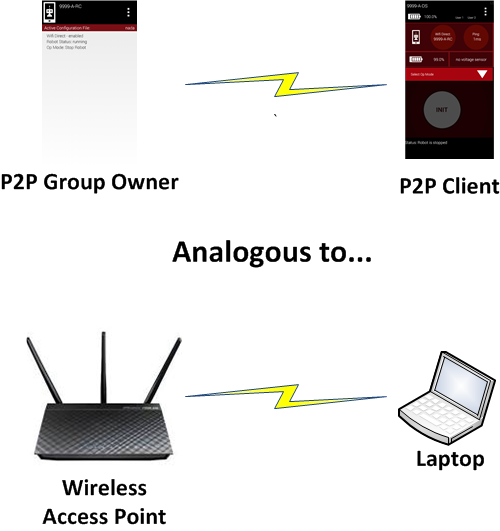
The P2P group owner is analogous to a Wi-Fi access point.
Programming Laptop
During a typical FIRST Tech Challenge match, only a team’s Driver Station is connected to the Wi-Fi Direct group or the wireless access point (WAP) that is established by the team’s Robot Controller. Away from the competition field, however, a team might have additional devices connected to this Wi-Fi Direct group. For example, when a team edits an OpMode using the FTC Blocks Development Tool or the FTC OnBot Java Development Tool, their developer’s laptop will also be connected to the Robot Controller’s wireless network.
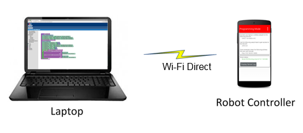
A team might also have a developer’s laptop connected when they are away from the competition field.
Note that the wireless connection between the developer’s laptop and the Robot Controller does not violate the prohibition in the Competition Manual on teams setting up their own wireless network. For this case, the developer’s laptop is connected to the existing Wi-Fi Direct group or wireless access point that is also used by the Driver Station to communicate with the Robot Controller.
Configuration Activity
The Android operating system has a built-in configuration screen, or activity, that can be used to view and configure the Wi-Fi Direct settings.
Note
For the FIRST Tech Challenge apps, you typically do NOT want to use the Android Wi-Fi Direct menu to pair your devices. Instead, you should use the Pair with Robot Controller activity that is available from the Settings menu of the FTC Driver Station app to pair/unpair your devices.
It is useful to be familiar with Android’s Wi-Fi Direct configuration activity. As an FTA/CSA you might need to use this screen to check on the configuration of an Android device, and to clear/erase remembered groups or do other tasks to help get a robot back in action.
Accessing the Wi-Fi Direct Configuration Activity
On your Android device, launch the Settings activity then click on the Wi-Fi item. |
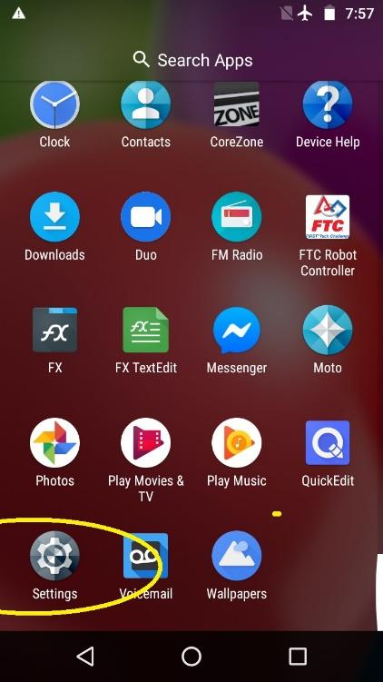 Launch the Settings menu. |
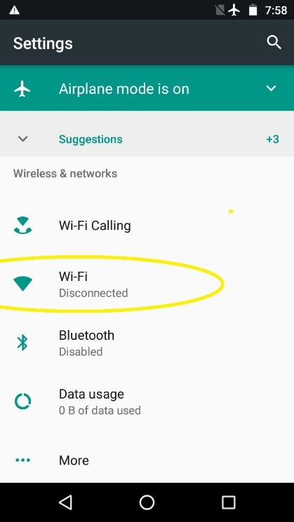 Click on “Wi-Fi”. |
To access the Wi-Fi Direct menu, touch the three dots in the top right-hand corner of the screen to display a short pop-up menu. Select Advanced from the pop-up menu. |
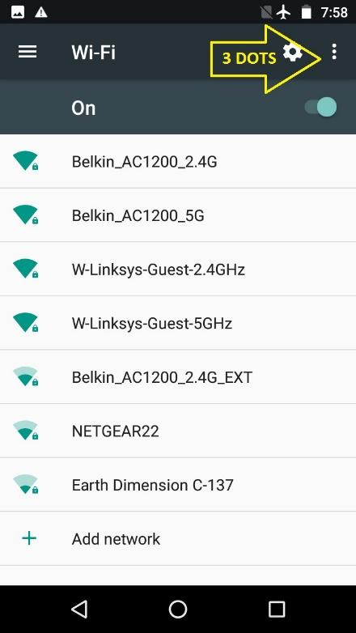 Click on the 3 dots. |
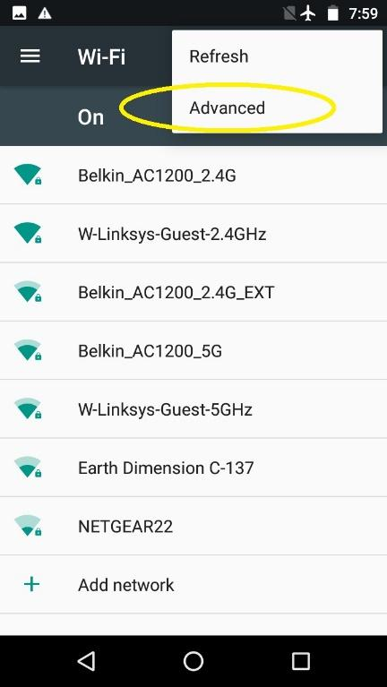 Choose Advanced. |
In the Advanced Wi-Fi menu, select Wi-Fi Direct. Note that the screenshots in this document were generated using an Android smartphone. The screen images and menu text might vary from device to device. |
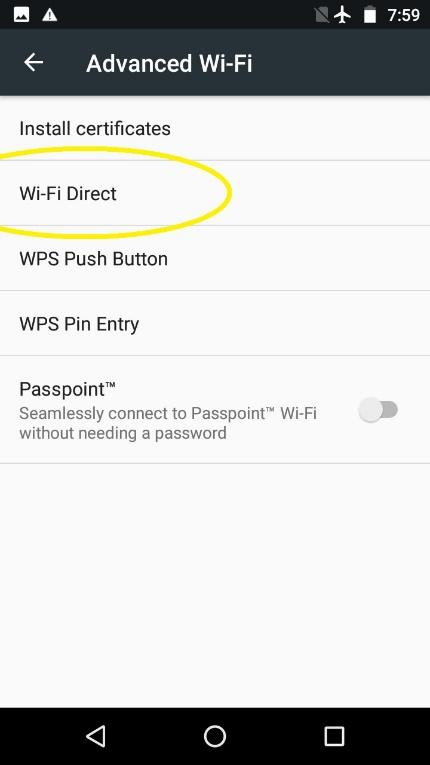 Select Wi-Fi Direct. |
This screen shows the Wi-Fi Direct group name, if any, along with any connected device(s) and remembered group(s). When troubleshooting, it is usually best to clear all the items that this screen will allow. Sometimes the “connections” listed here have become corrupted. Clearing connections here, and re-establishing later (from the FTC Driver Station app), is a fast, simple, and reliable way to ensure good communications.
Important
The Wi-Fi Direct group cannot be renamed at this stage. All connections must be cleared first. Also, you should request and be granted permission from the team before you clear any Wi-Fi Direct groups.
To begin, touch one of the remembered group names, then click OK to forget that group. Repeat for any other remembered groups listed. |
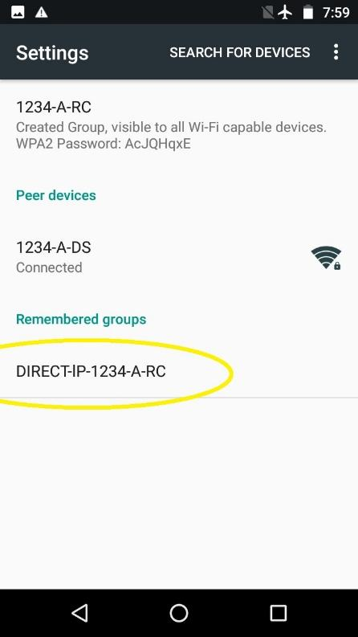 Touch any group name(s). |
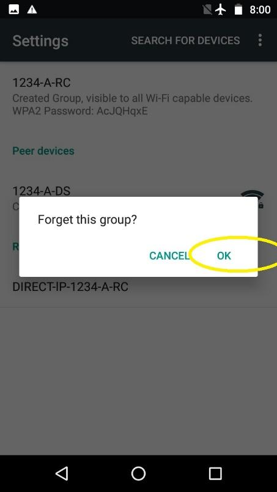 Forget each group. |
Next, do the same thing with any peer devices and the created group. |
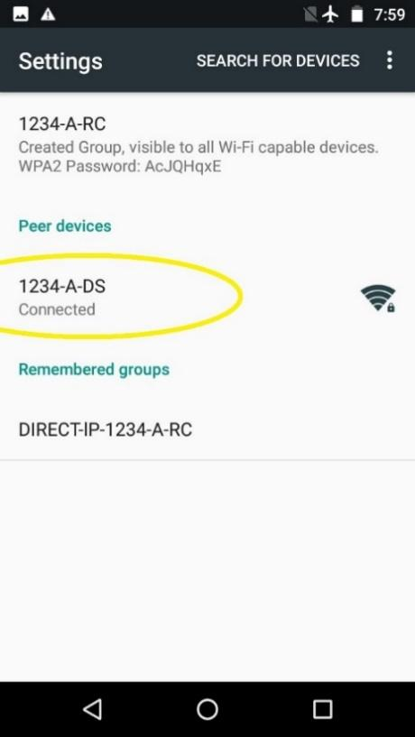 Peer Devices. |
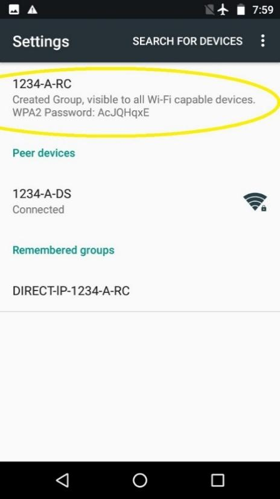 Created Group. |
Touching either of these items brings up the following “Disconnect?” screen – select OK. If one of these items cannot be disconnected after several tries, continue with the other items. A persistent item like this will generally not cause a problem later. When the disconnecting is complete, the screen will list only the device name, which was also the Wi-Fi Direct group name. |
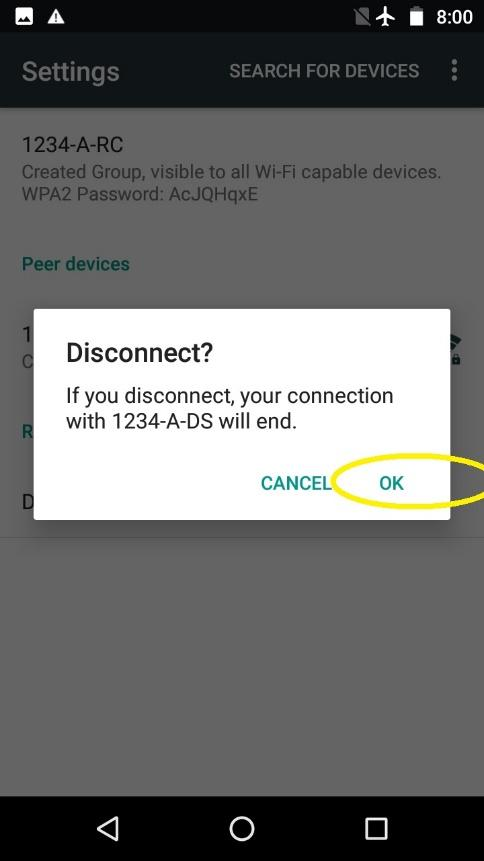 Select OK to disconnect. |
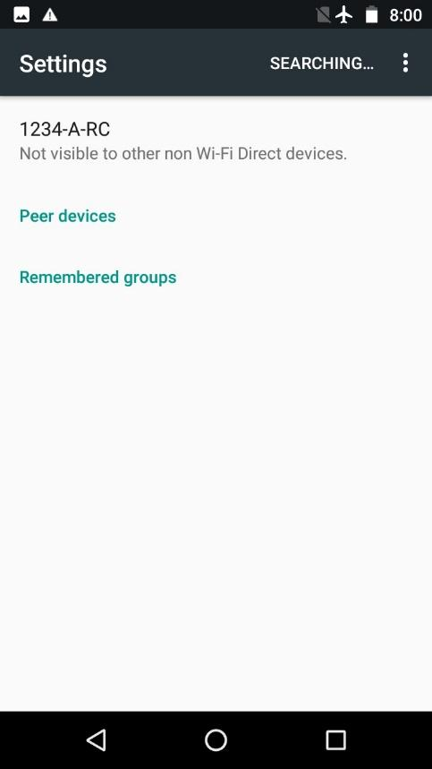 All clear. |
In this disconnected state, the device name can be changed. Touch the 3 dots again at the top right corner. Now the Configure Device selection is live and can be clicked. Device naming must follow the rules described in the Competition Manual. At this screen, some smartphones offer three features not present on older models. |
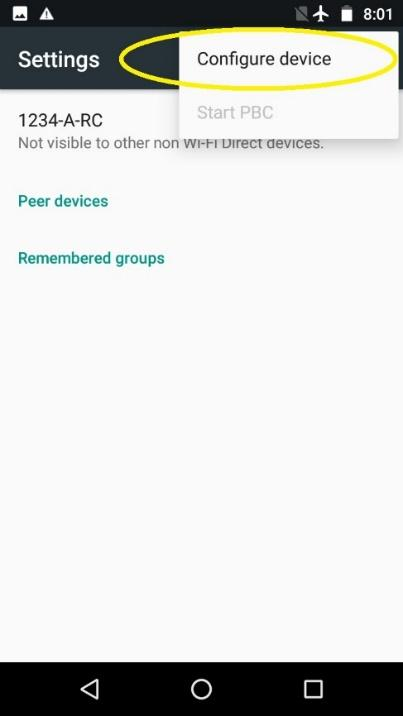 Configure Device. |
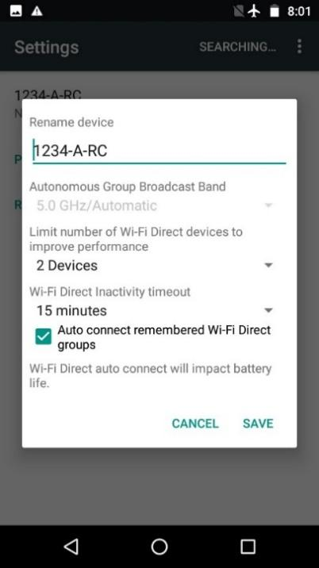 Rename Device. |
The maximum number of connections can be specified, ranging from 2 to 8. A smaller number is safer and more efficient, while a larger number could allow (for example) multiple Blocks or OnBot Java programmers to access a single shared Robot Controller device. Users must be very careful to avoid conflicts in sharing and editing. The other two items allow selection of a Wi-Fi Direct inactivity timeout, and whether or not to automatically connect to a remembered Wi-Fi Direct group when discovered. You can make selections here, but in general, the FTC apps will manage connections as needed. |
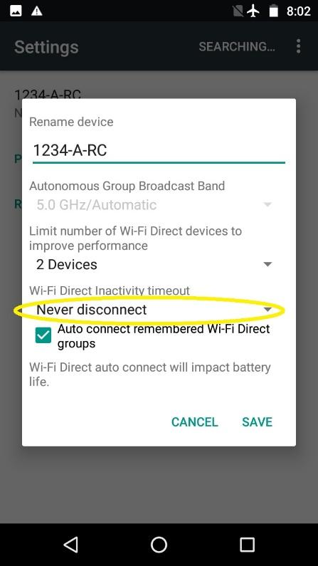 Optional Settings. |
Click Save when done and return to the home screen. Make new connections only from the FTC Driver Station app, as described in the following section.
Troubleshooting Wi-Fi Direct Connections
Ideally, teams should be able to use the Pair with Robot Controller activity of the FTC Driver Station app to pair to the target FTC Robot Controller. Once the devices have been paired through the FTC Driver Station app, they should automatically reconnect to each other when both devices are turned on and both devices have their respective FTC apps running.
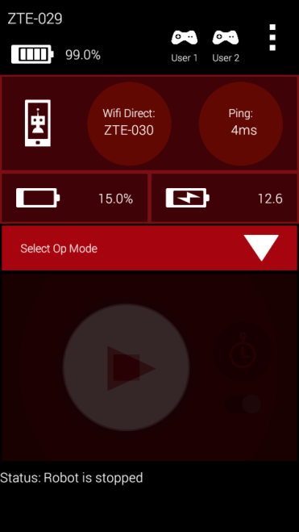
When the Driver Station is connected, it displays useful status info.
When your Driver Station is able to connect to the Robot Controller successfully, it will display useful status information (see the figure above) on its screen, including the name of the device that it is connected to, the average ping time between the Driver Station and Robot Controller, and voltage info for the Robot Controller smartphone (if used) and the main robot battery.
Is the Robot Controller On?
For problems connecting to the Robot Controller, check the following basic items:
Is the Robot Controller device turned on?
Smartphone specific:
Is the Robot Controller smartphone in Airplane mode with Wi-Fi enabled?
Is the Robot Controller device running the FTC Robot Controller app?
Is the FTC Robot Controller app in the foreground (and NOT minimized)?
The Robot Controller device must be powered on and have the FTC Robot Controller app running before the Driver Station can connect to it.
Are Both FIRST Tech Challenge Apps Installed?
If you are having problems pairing the Android devices, please make sure that you do not have the FTC Driver Station app and the FTC Robot Controller app installed at the same time on a single Android device. The apps have the potential to cause Wi-Fi Direct conflicts if they are both installed. Make sure neither device has both apps installed at the same time.
Do Both FTC Apps Have the Same Version Numbers?
If you have verified that the Robot Controller and the Driver Station are turned on and have their respective FTC apps running, verify that the apps have compatible version numbers. If you select the About menu item for each app, a new screen should appear on the Android device with version information about the app.
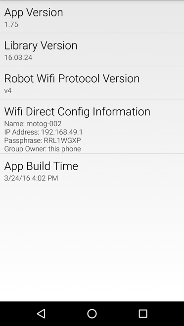 About screen for an app acting as the Wi-Fi Direct group owner. |
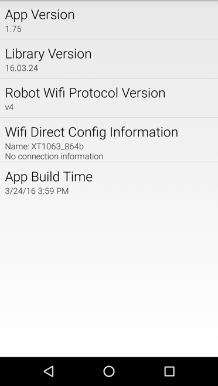 About screen for an app with no active Wi-Fi Direct connection. |
It is most important that the “Robot Wi-Fi Protocol Version” numbers of the FTC Robot Controller app and the FTC Driver Station app match. For example, if the Robot Controller has a “Robot Wi-Fi Protocol Version” number of v4 but the Driver Station only has a “Robot Wi-Fi Protocol Version” number of v3.5, then the two apps might be unable to connect and communicate with each other, due to the difference in the versions.
If the “Robot Wi-Fi Protocol Version” numbers do not match, then one of the apps should be downgraded or upgraded so that the numbers will match. Often it is advisable to upgrade, however, in some instances, a team might feel more comfortable downgrading to a previous, stable version of the app. Minimum required levels of FTC app versions are specified in the Competition Manual and its updates. The Competition Manual specifies a minimum required app version level, and the major and minor version numbers for the DS and RC apps must be the same.
Is Either Device Also Connected to Another Network?
For FIRST Tech Challenge competitions, we recommend that the Driver Station and Robot Controller devices are not connected to any other networks other than each other. It is possible, and sometimes desirable, to connect your Android device to an alternate wireless network:
Teams like to use the wireless ADB mechanism to debug their apps.
Teams might need to connect to a wireless network to download something to their phone from the internet.
Teams might have used the Android device to check their e-mail or look up something on the internet (we do not recommend doing this).
We also recommend that teams forget any other Wi-Fi or Wi-Fi Direct network, except for the primary Wi-Fi Direct connection between the Driver Station and Robot Controller (this applies only when using a smartphone as the Robot Controller).
If a team’s Driver Station is having trouble connecting to the Robot Controller, check the following:
Check to see if either Android device is connected to another Wi-Fi or Wi-Fi Direct device.
If either Android device is connected to another wireless network, disconnect the device from the other network, forget the other network, and restart the Driver Station and Robot Controller apps.
Are There Lots of Devices Trying to Pair Simultaneously?
Before an Android device can connect to another device, it will scan the wireless spectrum to determine what Wi-Fi Direct enabled devices are available in the vicinity. This discovery process can be negatively affected if there is a high concentration of Wi-Fi Direct devices in the vicinity that are also scanning the spectrum for available devices. For instance, if there are many devices in the vicinity, the target device that you are trying to connect to (for example, “12345-A-RC”) might not be visible in your list of available Wi-Fi Direct devices on your Android phone.
If you are at an event and the Android devices are consistently unable to find each other, or if the devices have trouble establishing a connection, it could be due to the presence of so many other Wi-Fi Direct enabled devices. If this is the case, one option would be to remove the pair of devices that you are trying to connect away from the crowd, and pair the two devices further away so that the other devices do not interfere with the discovery and pairing process.
Another option is to turn off the Android devices in the vicinity, and then have the teams turn on and pair their devices in successive small groups of no more than four teams or eight devices at a time. A wait time of a few minutes between each small group is recommended.
Once the devices are connected, they can withstand a reasonable amount of wireless traffic and noise and still operate reliably. This means that once a team has been able to pair/connect its Android devices, the team should be able to use the devices, even if there are a relatively high number of other devices operating in the vicinity.
For help diagnosing wireless problems once you’re at an event, see Troubleshooting Wireless Issues at an Event.